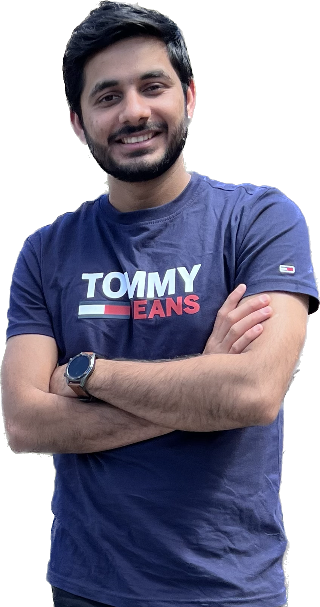

"It's me Dipak Poudel, and I am a highly motivated and passionate IT Support Engineer based in Sydney, Australia. With a Bachelor's degree in Information Technology from Victoria University, I have gained a wide range of knowledge and expertise in several areas of IT, including Microsoft Azure, Microsoft Server administration and management, Office 365 Administration, computer networks and networking technologies,Web technologies and hardware maintenance. I possess exceptional communication, time management, and customer service skills, which have allowed me to excel in my role as an IT Support Engineer. Additionally, I am always eager to learn and expand my knowledge base, making me a valuable asset to any team. My strong business acumen enables me to understand the value of teamwork, collaboration, and adaptation, ensuring that I am always working towards the betterment of my employer.
Download CV